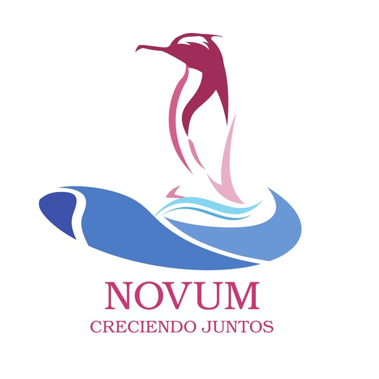

La comunidad de NOVUM se extiende a través de varios grupos en diversas redes, ofreciéndote la valiosa oportunidad de conectarte y participar activamente con otros entusiastas del software libre. Además, te brinda la posibilidad de interactuar con usuarios provenientes de diversas comunidades de Linux, fomentando así un ambiente enriquecedor y diverso donde puedes compartir conocimientos, experiencias y descubrir nuevas perspectivas sobre el mundo del software de código abierto.